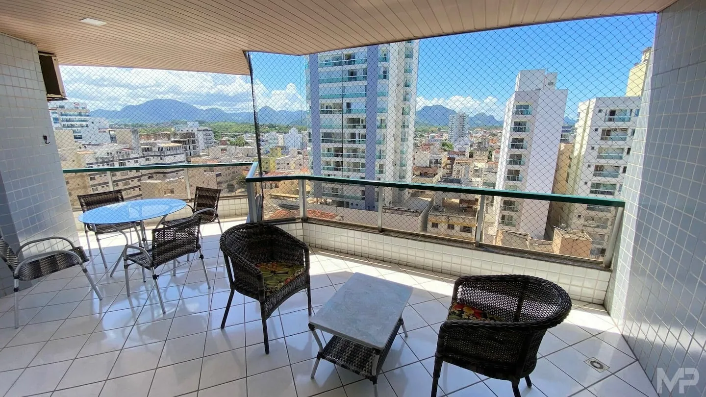

Encontre suas datas
GUARAPARI · ESPÍRITO SANTOOutros espaços.
Outros espaços.
A mesma vontade
de ficar.
Aluguel de apartamentos por temporada no Centro e na Praia do Morro. Escolha onde ficar nas suas férias em Guarapari.
Conheça os imóveis
Um lugar para os seus próximos dias.CASAS E APARTAMENTOS
Escolha onde ficar.
Imóveis inteiros, com espaço para estar junto e liberdade para fazer seus próprios planos.
Carregando imóveis…
Férias, verão e Réveillon
em Guarapari.
Procura hospedagem para a virada do ano, as férias de janeiro, um feriado ou o fim de semana? Consulte suas datas para conferir disponibilidade, estadia mínima e o total da hospedagem.
O Home Office Guarapari, no Centro, tem espaço para trabalhar. Para viajar em família, conheça também o apartamento na Praia do Morro. Veja os detalhes de cada imóvel e combine a reserva pelo WhatsApp.